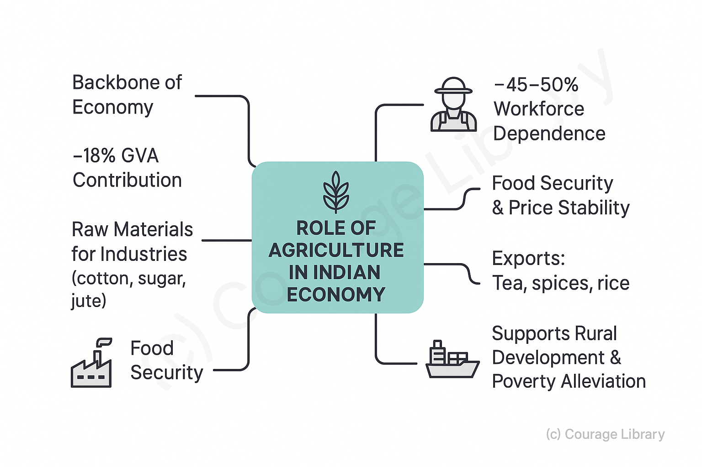
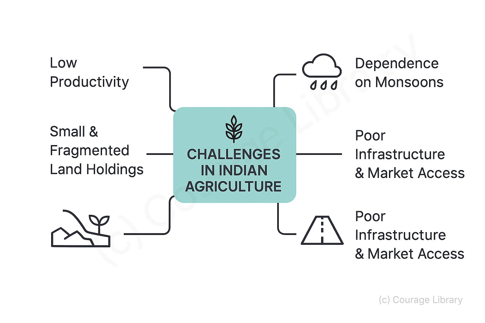
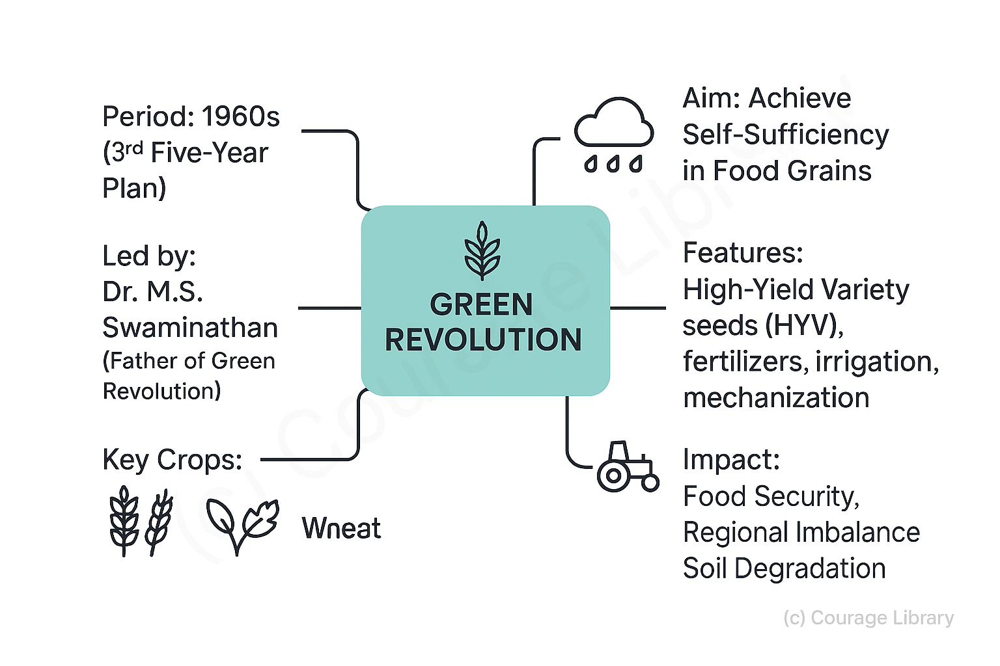
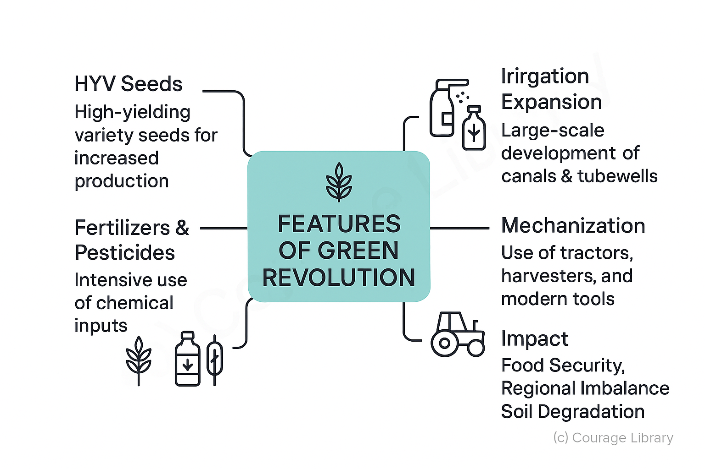
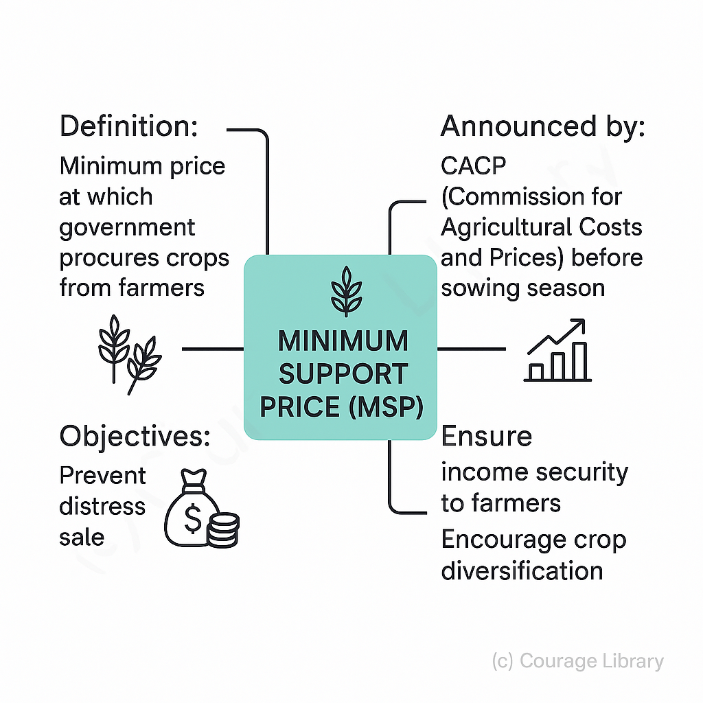

SSC CGL - Detailed Guide 2025
Self-Paced Course
Agriculture and Allied Sectors
Reference: Lucent GK, NCERT Class 6–12
Role of Agriculture in Indian Economy
- Agriculture is the backbone of the Indian economy.
- Contributes ~18% to Gross Value Added (GVA) and employs ~45–50% of the workforce.
- Supplies raw materials to industries (e.g., cotton, sugar, jute).
- Ensures food security and price stability.
- Major source of export earnings (tea, spices, rice).
- Integral to rural development and poverty alleviation.

Challenges:
- Low productivity
- Small and fragmented land holdings
- Dependence on monsoons
- Poor infrastructure and market access

Green Revolution and Its Impact
Green Revolution:
- Period: 1960s (initiated during 3rd Five-Year Plan)
- Aim: Achieve self-sufficiency in food grains
- Led by: Dr. M.S. Swaminathan (Father of Green Revolution)

Features:
- Use of High Yielding Variety (HYV) seeds
- Increased use of chemical fertilizers and pesticides
- Expansion of irrigation facilities
- Mechanization of agriculture

Impact:
| Positive | Negative |
|---|---|
| India became self-sufficient in food | Environmental degradation |
| Rise in wheat & rice production | Regional imbalance (mainly Punjab, Haryana) |
| Boosted rural employment | Soil fertility decline, water overuse |
Minimum Support Price (MSP)
Definition:
MSP is the minimum price at which the government purchases crops from farmers, regardless of market price.
Announced by:
Commission for Agricultural Costs and Prices (CACP), before each sowing season.
Objective:
- Prevent distress sale
- Ensure income security to farmers
- Encourage crop diversification

Crops Covered (23 crops):
7 cereals
- Wheat
- Rice
- Maize
- etc.
5 pulses
- Tur
- Moong
- Urad
- etc.
7 oilseeds
- Groundnut
- Mustard
- etc.
4 commercial crops
- Cotton
- Sugarcane
- Copra
- Jute
Procurement mainly happens through:
- Food Corporation of India (FCI)
- State agencies
Land Reforms and Irrigation
Land Reforms (Post-Independence):
| Reform Measure | Objective |
|---|---|
| Abolition of Zamindari System | Eliminate intermediaries between state & farmer |
| Tenancy Reforms | Provide security to tenants |
| Land Ceiling Act | Redistribute surplus land |
| Consolidation of Holdings | Reduce fragmentation |
| Computerization of Land Records | Increase transparency |
Irrigation:
| Type of Irrigation | Description |
|---|---|
| Canal Irrigation | Large-scale; used in Punjab, Haryana |
| Tube Wells / Borewells | Popular in U.P., Bihar, Punjab |
| Tank Irrigation | Traditional, used in South India/td> |
| Drip & Sprinkler Irrigation | Modern, water-efficient |
Government Programmes:
- PM Krishi Sinchayee Yojana (Per Drop More Crop)
- Accelerated Irrigation Benefits Programme (AIBP)
Schemes related to Farmers
PM-KISAN (Pradhan Mantri Kisan Samman Nidhi):
| Feature | Details |
|---|---|
| Launched in | 2019 |
| Benefit | ₹6,000 per year in 3 equal installments |
| Eligibility | Small and marginal farmers (landholding criteria) |
| Objective | Provide income support |
PMFBY (Pradhan Mantri Fasal Bima Yojana):
| Feature | Details |
|---|---|
| Launched in | 2016 |
| Objective | Crop insurance against natural calamities |
| Premium Rate | 2% (Kharif), 1.5% (Rabi), 5% (commercial crops) |
| Implemented By | Insurance companies, monitored by State & Centre |
Other Key Schemes:
| Scheme | Purpose |
|---|---|
| Kisan Credit Card (KCC) | Short-term credit for farmers |
| Soil Health Card Scheme | Improve soil fertility |
| E-NAM (see below) | Online agri-marketplace |
| PM Krishi Sinchayee Yojana | Improve irrigation efficiency |
| Rashtriya Krishi Vikas Yojana | Holistic development of agriculture & allied sectors |
Agri Marketing and eNAM
Agricultural Marketing Issues:
- Middlemen exploitation
- Inadequate storage & warehousing
- Lack of standardization & quality control
- High transportation costs

eNAM (Electronic National Agriculture Market):
| Feature | Details |
|---|---|
| Launched in | 2016 |
| Implemented by | Small Farmers' Agribusiness Consortium (SFAC) |
| Objective | Unified national market for agricultural commodities |
| Benefits | Better price discovery, transparency, removes middlemen |
| Coverage | 1300+ Mandis across 28 states/UTs (as of 2023) |
Other Marketing Reforms:
- Model APMC Act (2003) & Model Agricultural Produce and Livestock Marketing Act (2017)
- Farmer Producer Organisations (FPOs) to strengthen collective bargaining
- Warehouse Receipt System for collateral loans
Developed By Jan Mohammad
Next
Start Your SSC CGL Journey Now!
Join Courage Library to experience disciplined study and expert support.
Be a Couragian!